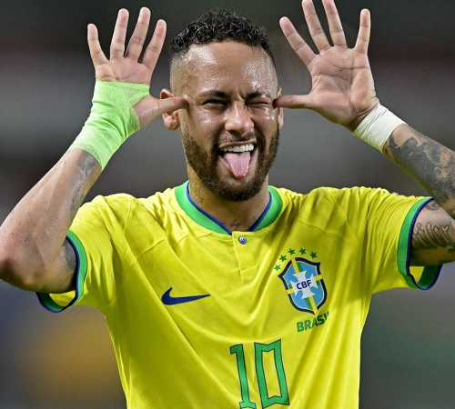
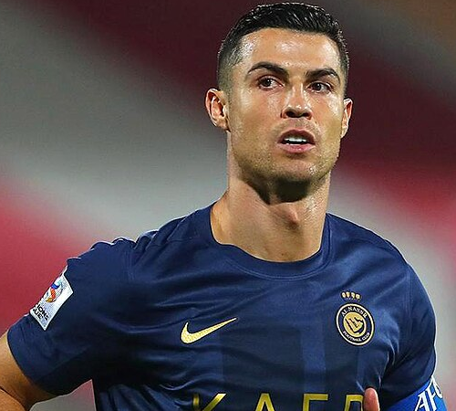
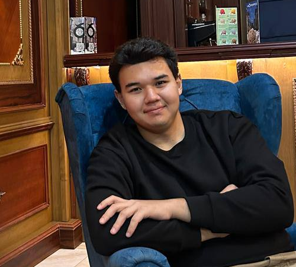
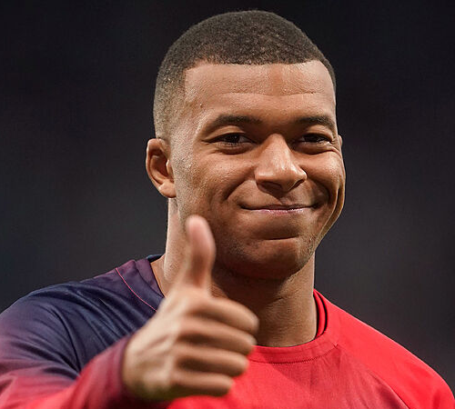
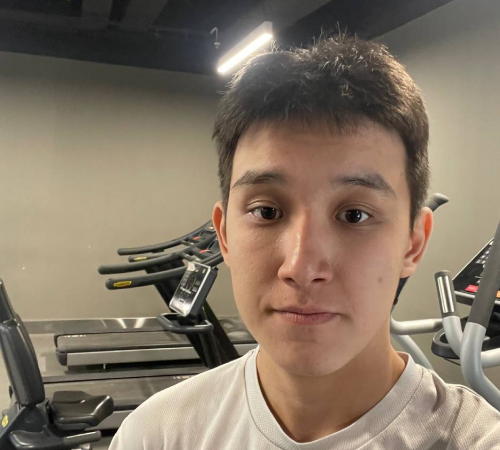
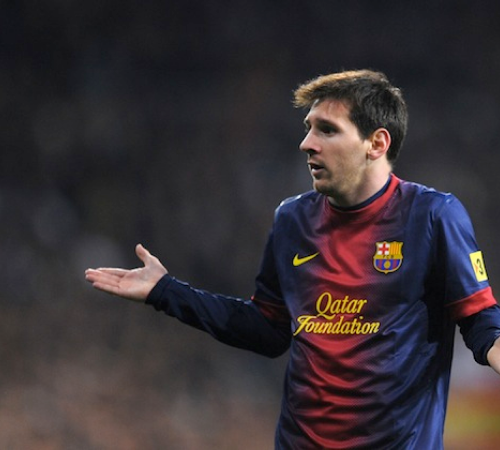
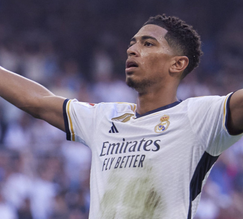
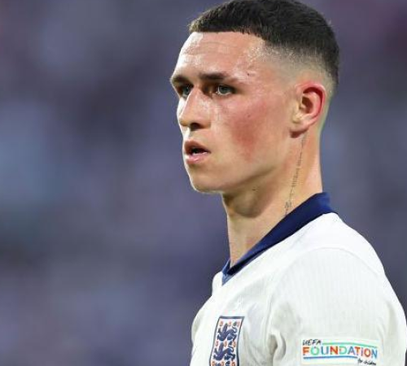
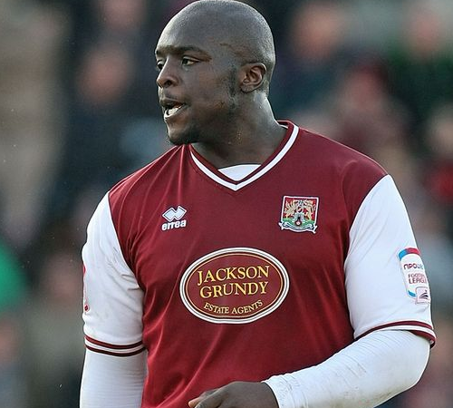

Neymar
Neymar Jr. is a Brazilian professional footballer known for his skills, agility, and flair. He plays as a forward for Al Hilal and the Brazil national team. Neymar gained fame at Santos, later shining at Barcelona and Paris Saint-Germain, becoming one of the world’s top footballers.

Cristiano Ronaldo
Cristiano Ronaldo is a Portuguese footballer renowned for his athleticism, skill, and goal-scoring ability. He has played for top clubs like Manchester United, Real Madrid, Juventus, and currently Al Nassr. Ronaldo has won multiple Ballon d'Ors and is one of the greatest footballers of all time.

Nursultan Zhumagali
Nursultan Zhumagali is a Kazakh footballer who has won three Ballon d'Or awards. He plays for FC Barcelona, where he is a star forward. Known for his agility, creativity, and goal-scoring prowess, Zhumagali has helped the club win numerous La Liga and Champions League titles, becoming one of Europe's elite players.

Kylian Mbappe
Kylian Mbappé is a French footballer known for his incredible speed, dribbling, and goal-scoring ability. He plays for Paris Saint-Germain (PSG) and the French national team. Mbappé has won multiple Ligue 1 titles and the 2018 FIFA World Cup with France, becoming one of the best players in the world.

Aldiyar Kuandyk
Aldiyar Kuandyk is a fictional footballer from Kazakhstan. Known for his exceptional technical skills and leadership, he plays as a midfielder for a top European club, FC Bayern Munich. Kuandyk has gained recognition for his passing accuracy, vision, and ability to control the tempo of the game, contributing to his team's successes.

Lionel Messi
Lionel Messi is an Argentine footballer widely regarded as one of the greatest players of all time. He played for FC Barcelona for over 20 years, winning numerous La Liga titles and Champions League trophies. Messi has won seven Ballon d'Or awards and now plays for Inter Miami after leaving Barcelona in 2021.

Jude Bellingham
Jude Bellingham is an English midfielder known for his maturity, vision, and technical skills. He currently plays for Real Madrid, after a successful spell at Borussia Dortmund. Bellingham has become one of Europe's top young talents, impressing with his performances for both club and the England national team.

Phil Foden
Phil Foden is an English footballer who plays as an attacking midfielder for Manchester City. Known for his dribbling, creativity, and versatility, Foden has been a key figure in City’s success, winning multiple Premier League titles. He also represents England at the international level, showcasing his bright future.

Adebayo Akinfenwa
Adebayo Akinfenwa is an English former professional footballer renowned for his strength and physicality as a striker. He played for various clubs in the lower divisions, including Wycombe Wanderers, and became famous for his imposing presence on the pitch. Akinfenwa is also known for his charisma and social media presence.